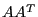

Next: Sifting Logging Up: Logging Previous: Simplex Logging
The barrier log can be divided into five sections: the presolve section, the barrier preprocessing section, the barrier progress section, the crossover progress section, and the summary section.
Presolve Section
As mentioned earlier, the first thing the Gurobi optimizer does when
optimizing a model is to apply a presolve algorithm in order
to simplify the model. The first section of the Gurobi log provides
information on the extent to which presolve succeeds in this effort.
Consider the following example output from NETLIB model dfl001:
Presolve removed 2381 rows and 3347 columns Presolve time: 0.12 sec. Presolved: 3690 Rows, 8883 Columns, 31075 NonzerosThe example output shows that presolve was able to remove 2381 rows and 3347 columns, and it required 0.12 seconds. The final line in the presolve section shows the size of the model after presolve. This is size of the model that is passed to the barrier optimizer. Note that the solution that is computed for this model is automatically transformed into a solution for the original problem once barrier finishes (in a process often called uncrushing), but this uncrush step is transparent and produces no log output.
Barrier Preprocessing Section
The factor matrix for the linear system solved in each iteration of the barrier method can be quite large and quite expensive to compute. In order to reduce the cost of this computation, the first step of the barrier algorithm is to compute a fill-reducing reordering of the rows and columns of this matrix. This step can be quite expensive, but the cost is recouped in the reduced cost of the subsequent barrier iterations.
Once this fill-reducing reordering has been computed, the Gurobi Optimizer outputs information related to the barrier factor matrix:
Barrier statistics: Dense cols : 10 Free vars : 3 AA' NZ : 9.353e+04 Factor NZ : 1.139e+06 (roughly 14 MBytes of memory) Factor Ops : 7.388e+08 (roughly 2 seconds per iteration)The first line indicates how many columns from the constraint matrix were treated as dense. The second line indicates how many variables in the model are free. Dense columns and free variables can sometimes lead to numerical difficulties in the barrier solver, so it is sometimes useful to know that they are present. Note that these lines are only printed when the model contains dense columns or free variables.
The next line shows the number of off-diagonal entries in the lower triangle of . A scaled version of this matrix is factored in each iteration of the barrier algorithm, so the structure of the Cholesky factor depends on the structure of .
The final two lines indicate the number of non-zero values in the factor matrix, and the number of floating-point operations required to factor it. Note that the log also provides an estimate of how much memory will be needed by the barrier algorithm, and how long each barrier iteration will require: These are rough estimates that are meant to provide a general sense of how difficult the model will be to solve. If you want to obtain an estimate of overall solution time, note that most models achieve convergence in roughly 50 iterations, but there are many exceptions. Crossover runtime is typically comparable to the cost of a few barrier iterations, but this time can vary considerably, depending on the model characteristics.
Progress Section
The third section of the Gurobi barrier output provides information on the progress of the barrier method:
Objective Residual
Iter Primal Dual Primal Dual Compl Time
0 1.11502515e+13 -3.03102251e+08 7.65e+05 9.29e+07 2.68e+09 2s
1 4.40523949e+12 -8.22101865e+09 3.10e+05 4.82e+07 1.15e+09 3s
2 1.18016996e+12 -2.25095257e+10 7.39e+04 1.15e+07 3.37e+08 4s
3 2.24969338e+11 -2.09167762e+10 1.01e+04 2.16e+06 5.51e+07 5s
4 4.63336675e+10 -1.44308755e+10 8.13e+02 4.30e+05 9.09e+06 6s
5 1.25266057e+10 -4.06364070e+09 1.52e+02 8.13e+04 2.21e+06 7s
6 1.53128732e+09 -1.27023188e+09 9.52e+00 1.61e+04 3.23e+05 9s
7 5.70973983e+08 -8.11694302e+08 2.10e+00 5.99e+03 1.53e+05 10s
8 2.91659869e+08 -4.77256823e+08 5.89e-01 5.96e-08 8.36e+04 11s
9 1.22358325e+08 -1.30263121e+08 6.09e-02 7.36e-07 2.73e+04 12s
10 6.47115867e+07 -4.50505785e+07 1.96e-02 1.43e-06 1.18e+04 13s
The seven columns in each output row show the number of barrier
iterations performed to that point, the primal and dual objective
values for the current barrier iterate, the magnitude of the primal
and dual infeasibilites for the current iterate (computed as the
infinity-norms of the primal and dual residual vectors, respectively), the
magnitude of the complementarity violation of the current primal and
dual iterates (the dot product of the primal solution and the dual
reduced cost vector), and the amount of time expended to that point
(measured using wall clock time). When the primal infeasibility, dual
infeasibility, and complementarity satisfy barrier convergence
tolerances (controlled using the
BarConvTol parameter), the
solution is declared optimal and optimization is complete.
Unlike the simplex and MIP optimizers, the barrier optimizer produces a log line for each iterate, independent of the value of the DisplayInterval parameter.
Crossover Section
The fourth section of the barrier log provides information on the crossover step. This section is only present when crossover is selected (as controlled through the Crossover parameter. Crossover converts the interior point solution produced by the barrier algorithm to a basic solution.
The first stage in crossover is to push variables to bounds in order to obtain a valid basic solution. By default, this is done for dual variables first, then for primal variables. Progress of this phase is tracked with this portion of the crossover log...
Crossover log...
1592 DPushes remaining with DInf 0.0000000e+00 2s
0 DPushes remaining with DInf 2.8167333e-06 2s
180 PPushes remaining with PInf 0.0000000e+00 2s
0 PPushes remaining with PInf 0.0000000e+00 2s
Push phase complete: Pinf 0.0000000e+00, Dinf 2.8167333e-06 2s
Each line indicates how many push steps remain, the amount of
infeasibility in the current solution, and the elapsed barrier time.
Upon completion of the push phase, crossover has a basic solution that isn't necessarily optimal. The resulting basis is passed to simplex, and simplex completes the optimization...
Iteration Objective Primal Inf. Dual Inf. Time
1776 1.1266396e+07 0.000000e+00 0.000000e+00 2s
The five columns in each output row of the simplex log show the number
of simplex iterations performed to that point in the crossover
algorithm (including the push steps), the objective value for the
current basis, the magnitude of the primal infeasibility for the
current basis (computed as the sum of the absolute values of all
constraint and bound violations), the magnitude of the dual
infeasibility (computed as the sum of the absolute values of all dual
constraint violations), and the amount of time expended by the
crossover algorithm to that point (measured using wall clock time).
When the primal and dual infeasibilities both reach zero, the basis is
optimal and optimization is complete.
Summary Section
The final section of the barrier log provides summary information. It provides a summary of the work that the barrier algorithm performed, including the iteration count and the runtime, and it provides information on outcome of the optimization. The summary for a model that is solved to optimality would look like this:
Solved in 7212 iterations and 48.38 seconds Optimal objective 1.126639605e+07Other termination states produce different summaries. For example, a user interrupt would produce a summary that looks like:
Stopped in 7482 iterations and 3.41 seconds Solve interruptedHitting a time limit would produce a summary that looks like:
Stopped in 9221 iterations and 5.00 seconds Time limit exceeded